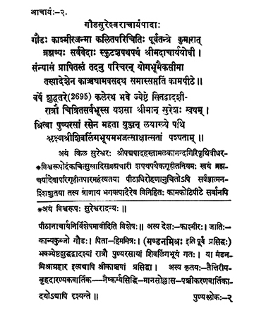

2. आचार्य - २ - श्रीगोढसुरेश्वरचार्यपादाः
गौढः काश्मीरजन्मा ••• कामपीठे ॥ ५ ॥
वर्षे शुद्धतरे ••• पश्यताम् ॥ ६ ॥
A native of Gauḍadeśa, born in Kashmir, pious, Śrī Sureśvara, secured the knowledge of Pūrva Mīmāṁsā from Kumārila bhaṭṭā, well-versed in Vedas, and avowed to house-holder's life; he engaged in debate with Ācārya and got initiated into asceticism. Then, attending on Ācārya, he reached the highest level in yogic practices and by the directions of the Ācārya, he lived for seventy years at the Kāmapīṭha in Kāñci.
Then, in the year 2625 of the Kali era, on the night of the twelfth day of the bright fortnight in the month of Jyeṣṭha of the Bhava year that revered Sureśa, having taken the world by surprise through his fame by traversing throughout the earth, united/merged with the Supreme Being in the path known as Laya obtained the state of beautiful form of Śivaliṅga verily in the presence of on-lookers.
